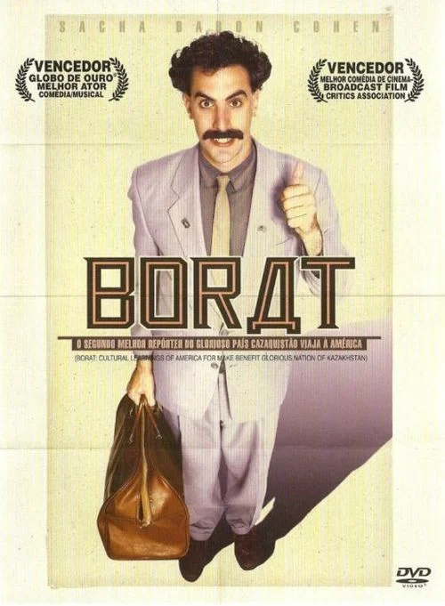
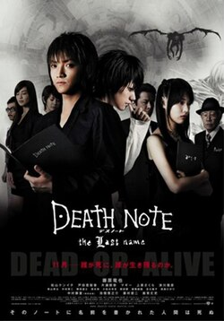

Top 3 melhores filmes de 2006
Abaixo irei apresentar os 3 melhores filmes que estiveram em seus auges de filmes em 2006, marcando o meu nascimento, mas também marcando a euforia dos filmes dessa época. Aproveite abaixo a melhor lista de todas:
Listas
1. O Labirinto do Fauno

Na Espanha de 1944, a filha dum oficial do exército escapa a um mundo de fantasia.
- Indicados:
- Babel
- Cartas de Iwo Jima
- Os Infiltrados
- A Conquista da Honra
- A Rainha
2. Borat: O Segundo Melhor Repórter do Glorioso País Cazaquistão Viaja à América

Borat, um jornalista do Cazaquistão, viaja aos Estados Unidos para reportar sobre o modo de vida americano.
- Indicados:
- O Diabo Veste Prada
- Dreamgirls: Em Busca de um Sonho
- Maria Antonieta
- Pequena Miss Sunshine
- Piratas do Caribe: O Baú da Morte
3. Death Note: O Último Nome

Light põe em prática um complexo esquema para afastar as suspeitas de que é o responsável pelas mortes. No percurso, ele conhece uma fã apaixonada e disposta a ajudá-lo.
- Indicados:
- Christian Bale, O Grande Truque
- Matt Damon, Os Infiltrados
- Leonardo DiCaprio, Diamante de Sangue
- Leonardo DiCaprio, Os Infiltrados
- Will Smith, À Procura da Felicidade